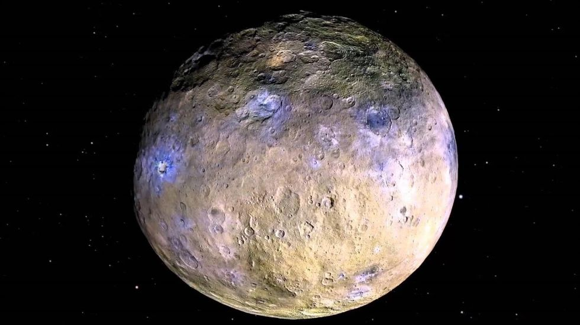
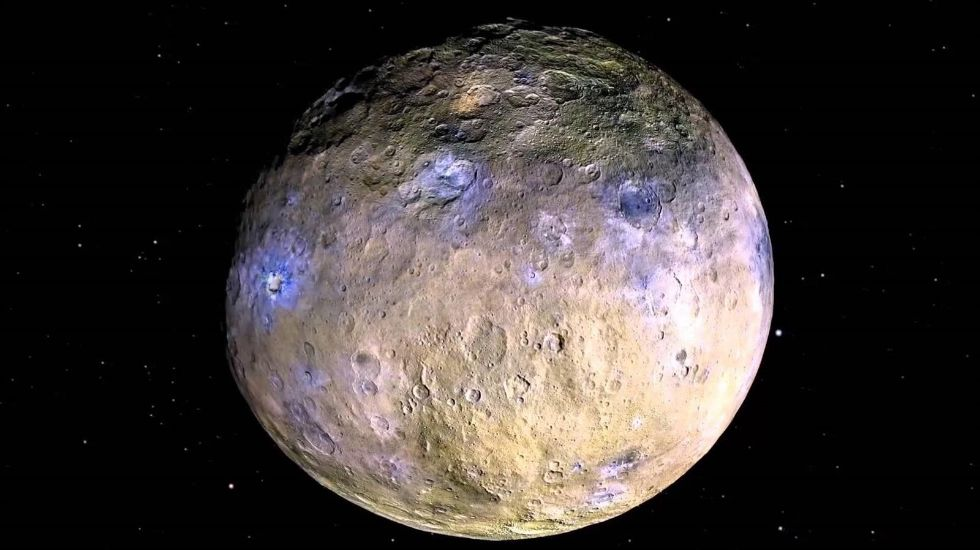
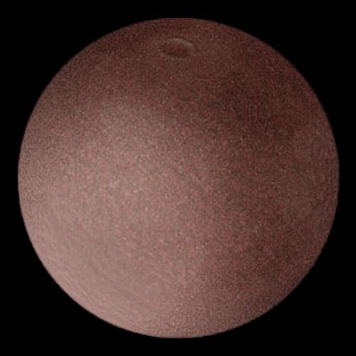
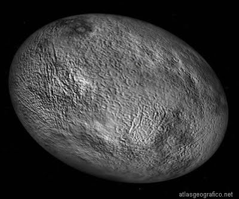
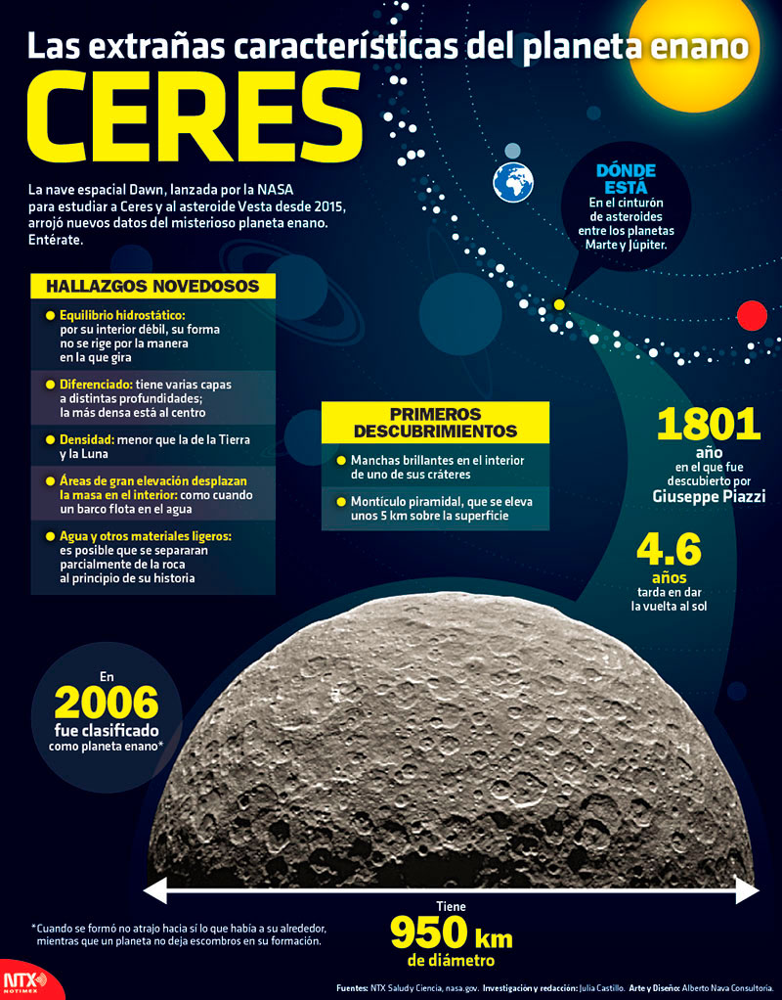
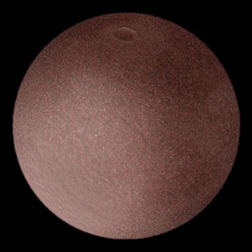
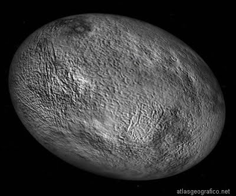
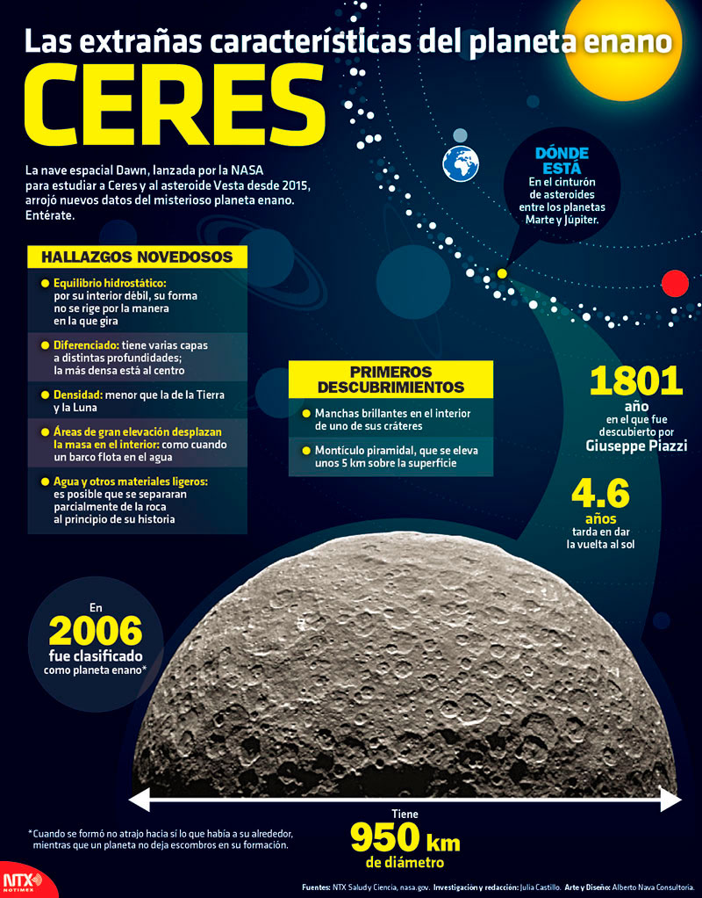

Planetas Enanos
¿Qué es un planeta enano?
De todo el conjunto de cuerpos celestes que se encuentran en el universo, los planetas enanos ocupan un lugar importante. El más famoso es Plutón, otrora considerado un planeta clásico. En 2006, la Unión Astronómica Internacional creó una nueva categoría de planetas llamados plutoides y reclasificó a Plutón como planeta enano.
Esta institución reconoce ahora que los planetas enanos realizan una órbita alrededor del Sol, tienen suficiente masa para tener una forma casi esférica, no han limpiado la vecindad de su órbita y no son lunas (satélites). Un planeta enano no es gravitatoriamente dominante pues comparte su espacio orbital con otros cuerpos de tamaño similar.
Estos cuerpos de roca o hielo sólido son más pequeños que los 8 planetas clásicos e incluso más pequeños que Mercurio y la luna de la Tierra; muchos de ellos están situados en el Cinturón de Kuiper, un conjunto de cuerpos rocosos que se ubican después de la órbita de Neptuno. Estos planetas varían en tamaño, masa, duración de órbita alrededor del Sol y duración de rotación sobre su eje. Aunque no poseen anillos, algunos sí cuentan con satélites.
Existen hasta el momento 5 planetas enanos reconocidos, pero se cree que pueden existir varias decenas más de ellos.
¿Cuáles son los planetas enanos?
Plutón
Era uno de los 9 planetas que todos los estudiantes aprendieron hasta 2006. Su reconsideración y posterior destitución como “planeta” provocó una oleada de acalorados debates, pero finalmente se convirtió en uno de los planetas enanos.
Se encuentra a unos 5,900 millones de kilómetros de distancia al Sol. Su superficie está compuesta por nitrógeno, metano y monóxido de carbono. Su atmósfera es tan tenue que se expande cuando se acerca al Sol y colapsa cuando se aleja.
Ceres
Se encuentra en el cinturón de asteroides entre Marte y Júpiter y tiene un diámetro aproximado de 950 kilómetros. Los astrónomos lo consideran un planeta embrionario, puesto que en un principio estaba destinado a ser un planeta clásico pero las perturbaciones gravitacionales de Júpiter impidieron su desarrollo completo.
Bajo su superficie se hallan grandes cantidades de agua helada, sobre todo alrededor de su núcleo. Un día en Ceres dura alrededor de 9 horas en términos terrestres.
Eris
Este planeta descubierto en 2003 es ligeramente más pequeño que Plutón y se sitúa mucho más allá del Cinturón de Kuiper. Como se encuentra tan lejano del Sol, su atmósfera se congela cerca de la superficie. Sus temperaturas se encuentran entre los -217° centígrados y los -243° centígrados. Su superficie rocosa es probablemente parecida a la de Plutón.
Makemake
Está alojado en el Cinturón de Kuiper y es un poco más pequeño que Plutón. En su superficie se han encontrado rastros de etano, metano e hidrógeno congelado así como de unas moléculas llamadas tolinas, que provocan el tono rojizo de su superficie.
Su descubrimiento ocurrió en 2005 y fue reconocido como planeta enano en 2008.
Haumea
De tamaño similar al de Plutón, realiza un movimiento de rotación sobre su eje en un tiempo increíblemente rápido: 4 horas terrestres. Por el contrario, realiza una órbita alrededor del Sol en 285 años terrestres.
Se encuentra en el Cinturón de Kuiper. Se le conocen dos lunas o satélites, cuyos nombres son Hi’aka y Namaka, nombres correspondientes a deidades de la mitología hawaiana.
 

 




